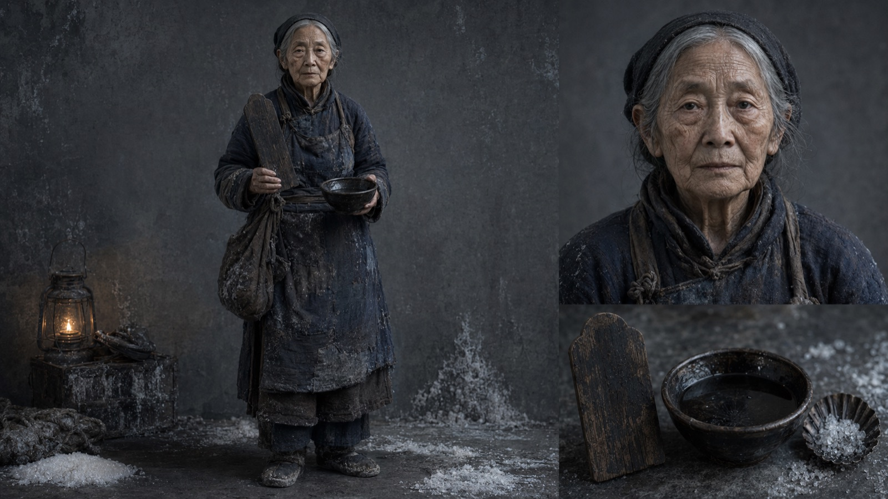

画面由本人以 AI 生成并精修——「真人出镜」这件事，也交给了一致性工程。
ABOUT · 关于
把导演权
把导演权
留给人。——
我是汤辉元，今年 27 岁，在上海做影像工作。过去五年，我是人像修图师——在海马体摄影精修了 60000+ 张客片；现在我是调色师与 AI 影像创作者——结合主流 AI 模型，月均交付 5000+ 张图片，同时用即梦和 Seedance 把自己写的分镜脚本变成会动的画面。
修图师出身的人做 AI 影像，有个天然的习惯：先问画面经不经得起放大。皮肤有没有质感，暗部有没有层次，红是不是红得发腻——这些标准不会因为画面是生成的就放宽。另一个习惯是把流程拆成工位：稳定交付靠的不是灵感爆发，而是每一步都有标准、可检查、能交接。
技术会继续变，工具会继续换。但故事要讲什么、画面要克制到什么程度、哪些权力不能交给机器——这些由人决定的部分，才是我真正想练的手艺。
EXPERIENCE & EDUCATION
经历与教育
2025.07 — 至今
调色师 / 后期制作 · 礼成文化传媒（上海）
日均 300+ 张调色，结合 AIGC 月均 5000+ 张图片交付，累计 25000+。把 AI 模型嵌进生产流水线。
2025.05 — 2025.07
数码师 · 桔子摄影（上海）
婚纱与证件照精修，商业修调。
2021.05 — 2025.04
人像修图师 · 海马体摄影（杭州）
五年人像精修，累计精修客片 60000+ 张，客户满意度 90%+。双曲线、中间调修图——后来成了我判断 AI 画面质感的底尺。
2025.12 — 2026.03
AIGC 人像生成师 · 「AIGC 人像照」项目
商业模型结合 PS，交付与客户基准图相似度 95%+ 的 AI 人像，约 30 单、覆盖约 100 个角色。
2026 — 至今
AI 影像创作 · 笼中鹤 / 返航信号 / 网之外
自编剧、自分镜、自生成、自剪辑。三个 AI 短片项目与一套正在成形的「片场工单」方法论。
2017 — 2020
江海职业技术学院 · 计算机应用技术
大专。